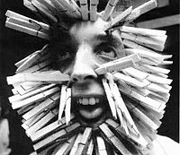
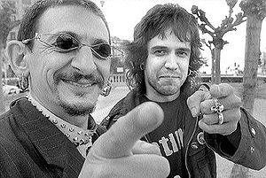

Estudiantes de Bellas Artes
 De: La Frikipedia, la enciclopedia extremadamente seria.
De: La Frikipedia, la enciclopedia extremadamente seria.
| De la serie tribus urbanas del mundo:
|
| Estudiante de Bellas Artes
|
Ejemplo de la tribu

|
| Retrato de Estudiante de bellas Artes hecho por otro Estudiante de Bellas Artes
|
|
| Hábitat
|
Institutos y/o Universidades
|
| Inteligencia
|
son mas babosos estudiosos( si claro )
|
| Frase favorita
|
Ahora mizmo esthoy trabajando(mientras se hace un molde de su culo en escayola)
|
| ¿Peligroso?
|
Mucho, puede acabar como éste.
|
| Obsesión
|
No trabajar.
|
| Notas
|
Suelen sufrir de paranoias, egoísmo, etnocentrismo, ego desmesurado, egocentripetismo, egopijismo, etc
|
Los estudiantes de Bellas Artes son seres de más allá de las Puerta de Tannhauser cuya fama sólo es igualada por la fusión de un friki con un jebi (o un gafapasta con un punki), sus hábitos alimenticios distan décadas-luz de cualquier habitante racionalista del Universo.
Suelen distinguirse ya desde su nacimiento, dado que pretenden ser originales desde principio a fin, su infancia se desarrolla en ambientes femeninos, no quiere saber nada de deportes (de hecho no los ha visto nunca) y se cree tan incomprendido que algunos caen episodios emo a lo largo de su vida con estadías indefinidas. Su héroe suele ser José Bois.
Historia
Durante la época de los hombres con faldita y chicos que se dejaban magrear por viejos, los estudianes de Bellas Artes eran considerados unos albañiles normales( como los que hicieron el Partenón), ya con el Imperio ROmano seles subieron los humos y pretendieron tener el privilegio de ser sólo violentados por el Emperador de todo y su santo PAtrón era el Padre Apeles, y en la Edad Media más delo mismo, pero sólo con el Montejurra, Penosiños, Toledo, Valencia y el barco de ávila, a Tui no van porque no les gustan las titis)
Vida de cualquier estudiante de Bellas Artes
Normalmente suelen nacer con la estrella invertida por lo que tiene una infancia más cutre que la rutina de Alfredo Landa antes de que se fuese a Torremolinos, suelen digievolucionar a marchas forzadas en la adolescencia, ya que no tienen ninguna gana de trabajar, y al no saber nada de ndada de literatura suelen elegir el bachillerato de Artes (si camarada, ese antro infecto por donde todo friki debe pasar o conocer a alguien para a su vez ser friki).
Tras tomar Red Bull con estrella Galicia suelen aprobar selectividad y pasar a dos destinos:
- Estudiar en una Escuela de Arte, donde aprenderán a ser dados por culo por cualquier estudiante universitario de Bellas Artes.
- "Estudiar" Bellas Artes en la Universidad (la de la vida no ¿eh?).
Con el lema "Mamá (nunca hablan con su padre) quiero ser artista" se verá obligado a estudiar en una de dos, si escoge la escuela de Arte (fundada por habitantes de Czarikistán) conspirará para entrar en la Universidad o bien fumará porros todos los días para acostumbrarse a que le den por el ojal cualquier Estudiante de Bellas Artes.
Normalmente los estudiantes de bellas artes suelen dar y recibir, dan a los de las escuelas de arte y reciben (por eso estudian Fellas Artes) tras un largo consumo de puros (marca Flekon "el único puro que se fuma de rodillas"). Si "estudias" bellas artes pero sin el máster de Fellas artes nunca llegarás a "trabajar" de artista y quedarás el resto de tu vida en el segundo nivel del juego de Zelda (si en la mazmorra de porculación)o sirviendo birras a los borrachos en algún antro (más conocido como mazmorra de porculación).
Cosas que nunca haría un estudiante de Bellas Artes
 Estudiantes de Bellas Artes en clases.
- Tener novio/a: están tan centrados en los pelitos de su ombligo que no se fijan en su alrededor.
- Pasear con cascos que leva todo el mundo y, menos aún, escuchar música que conoce todo el mundo o un 10% de humanos a s alrededor.
- Pensar, un estudiante de Bellas Artes no piensa ¡Actúa!
- Comprar ropa, endejamás!! siempre tiene que ser ropa súper cara de importación o ropa que le roba a su abuela.(a su abuelo no)
- Ir en coche: ellos siempre van elementos automotorizados al efecto de transporte humano.
- Vestirse normal: suelen vestir de "vintage" o con ropa que ellos se cosen todos puestos de tripi.
- Tener florecitas en casa, siempre tendrán una plantación de marijuana.
- Pasear: ni muertos, ellos vuelan a través de la realidad de las cosas, son sublimes.
- Comer normal.
- ¿Ya he dicho lo de vestir normal?
- Ver el mundo de colores, sólo lo ven en blanco y negro, por eso sólo hacen fotos en esos colores.
- Tener la casa mínimamente ordenada.
- Ir a pubs y bares normales, como mucho a bares pijos y/o modernillos.
- Escuchar la banda sonora de Big Brother y Bustamante.
- Nunca visitar instalaciones deportivas.
- No ver porno, pero si pelis chorras de Andy Warhol.
- No saber ni papa de matemáticas, geografía o quién escribió «Miguel de Cervantes» (cualquiera sabe que fue Don Quijote de la Mancha su autor).
Cosas que si hacen los estudiantes de Bellas Artes
- Guardar objetos (entradas, facturas, multas, mocos...) de forma compulsiva para cuando muera que tengan material para sus múltiples biografías y con qué llenar el museo dedicado a su obra.
- Visitar grandes ciudades, y una vez en ellas visitar compulsivamente Museos de bellas Artes.
- Ser capaces sólo de responder a preguntas de Artes en "¿Quién quiere ser millonario?" y amar en secreto a Carlos Sobera.
- Frecuentar el Pub Arny.
- Tener una estantería dedicada a Almodóvar, Dalí, La Pantoja y Alaska.
- Ver Sexo en Nueva York, ¡Incluso los tíos!
- Tener gratas experiencias sexuales con mucha gente a la vez mezclado con drogas sintetizadas en clase a base de Trementina y óleos varios.
- Drogarse con la excusa de que Warhol también lo hacía.
- Darse por el ojete con la excusa de que Warhol también lo hacía.
- Vestirse de forma Anormal y estrafalaria, si es de hsitórico que sea creíble pero con algo Anormal.
- Abrir clubs de alterne y tráfico de Armas porque Rimbaud también lo hacía.
- Abrir bares donde sólo puede entrar gente vestida de forma estrafalaria y escuchar a Einstürzende Neubauten.
- Traer costumbres de otros planetas, como la de darse por el ojete en vez de decir gracias y comer caca de Perro porque Divine tambien lo hizo!
- Buscar y pagar a gente a la que sacarle fotos en porretas en blanco y negro(a muchos les prometen sexo pero luego ná de ná).
- Ensuciar los muros de las calles con graffitis horteras o mensajes que sólo ellos entienden.
- Acosar a la gente normal por la calle con falos de escayola al mismo tiempo que berrean "Es una performans, es una performans!"
Autor(es):
- Titvs
- Not so friki
- Generibot
- Fdecus
Frikipedia 2005-2016, Licencia
GFDL 1.2 - Extraído por FrikiLeaks